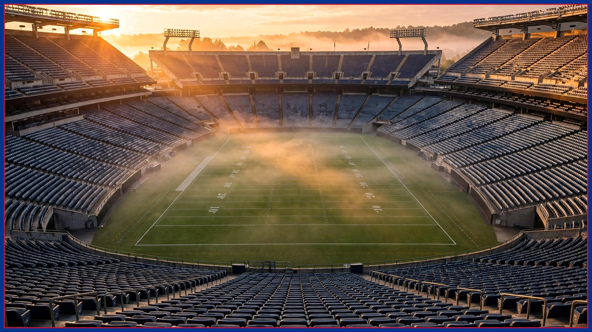

Buffalo Bills Just Got GREAT News About Lamar Jackson
Lamar Jackson is expected back for Nov. 1 — but "expected" is doing a lot of work in that sentence. What a week of conflicting reports actually tells us about Sunday at Highmark Stadium.

The bye week is over, the Ravens are coming to Orchard Park on Sunday, Nov. 1 at 1 PM ET, and the only question that matters has followed Buffalo out of the bye: which version of Lamar Jackson shows up? The reports out of Baltimore this week have pointed toward Jackson returning to the lineup after missing time — and on paper, a two-time MVP coming back sounds like bad news for the home team. Dig one layer down, and it might be the best news the Bills got all week.
Here is what we actually know, versus what is being assumed. Jackson has missed Baltimore's recent games. He has said himself, earlier this month, that if he pushed it he would be restricted — his word was that he'd be "a statue" back there. That is not a beat writer's guess. That is the quarterback describing his own ankle. A Lamar Jackson who cannot threaten the edge is a completely different problem for a defense to solve, and defensive coordinator Jim Leonhard knows it.
Leonhard's unit has taken its lumps this season — the Bills sit 31st in yards allowed, a number you'll see in every preview this week. But yards were never the whole story with this group, and a pocket-bound Jackson plays directly into what Buffalo can still do: rush with discipline, keep everything in front, and make a limited quarterback win with methodical drives instead of explosives.
On the other side of the ball, the math is simpler. Buffalo comes in 5-1, rested, at home, with an offense built around balance. James Cook is averaging 5.34 yards per carry on 627 rushing yards — the engine that lets head coach Joe Brady control tempo and keep his own defense off the field. If Buffalo owns the clock, Baltimore's returning quarterback spends the afternoon watching, which is exactly where you want a guy shaking off rust.
None of this makes Sunday a lock, and anybody telling you otherwise is selling something. Jackson at 80 percent is still one of the most dangerous players alive, and the Ravens know their season tilts on this game. But the version of this matchup that terrified Bills fans in September — full-speed Lamar, full playbook, no restrictions — is not the version walking into Highmark on Sunday, at least not according to Lamar himself.
The official word comes with the inactives ninety minutes before kickoff. Until then, the smartest read is the one the quarterback gave us: he's coming back, and he's coming back restricted. For a 5-1 team coming off its bye, at home, with the AFC's top seed in reach — yes, that qualifies as great news.
We'll have the Film Room breakdown of how Leonhard should attack a limited Jackson later this week, the Culture Desk on what this game means in the building, and The Tailgate with the disrespect rankings on Friday. Ravens week is here. Go Bills.
The BNC Blitz is free: the day's Bills news, one stat that matters, and one take, every morning. Join to keep reading — and never miss the end of a story again.